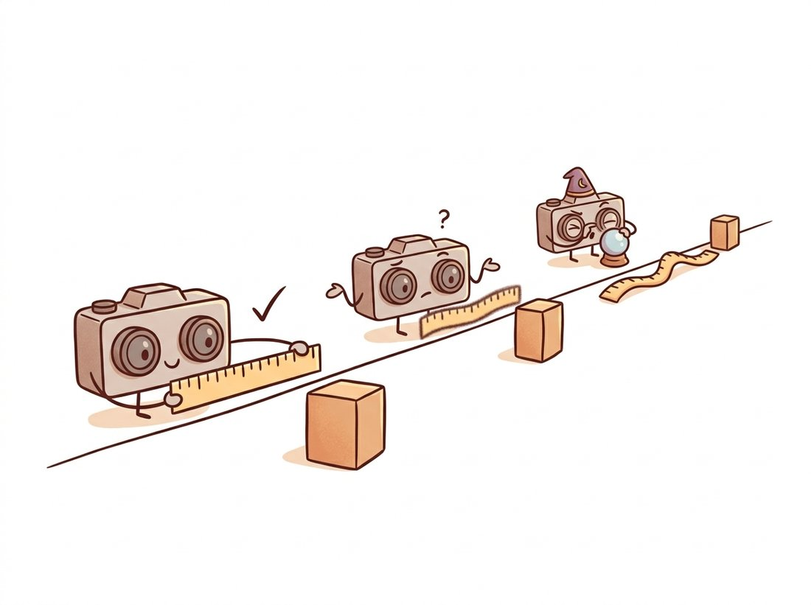

"At one meter I am a precision instrument. At ten meters I am an educated guess. At fifty meters I am astrology with a lens cap. The formula is right there; nobody reads the formula."
A Stereo Rig Spread Slightly Too Thin
One similar-triangles formula, $Z = fB/d$, converts the disparities of Section 13.4 into metric depth, and its derivative dictates the engineering of every stereo product ever shipped: depth error grows with the square of distance. This section derives the formula, takes its derivative seriously, and turns a disparity map into a metric depth map and a 3D point cloud with the $Q$ matrix that rectification handed us. It closes by placing passive stereo honestly among its competitors: active stereo, time-of-flight, LiDAR, and the learned monocular depth networks of Chapter 27.
Everything in this chapter so far produced relationships: constraints, matrices, pixel shifts. This is the section where numbers with units finally appear, the meters that a robot can brake on, and where the innocuous-looking baseline $B$, measured with a ruler during the calibration of Chapter 12, resolves the scale ambiguity that haunted Section 13.2's essential matrix.
1. Similar Triangles, One Formula Beginner
Take the rectified geometry of Section 13.4: two identical cameras with focal length $f$ (in pixels), optical centers separated by baseline $B$ (in meters), axes parallel. A point at depth $Z$ projects at $x_L = f\,X/Z$ in the left image and $x_R = f\,(X - B)/Z$ in the right (the right camera measures the same point from a center shifted $B$ to the right, so its sideways coordinate is $X - B$ rather than $X$). Subtract:
$$ d \;=\; x_L - x_R \;=\; \frac{fB}{Z} \qquad\Longleftrightarrow\qquad Z \;=\; \frac{fB}{d}. $$
Depth is inversely proportional to disparity, with the proportionality constant $fB$ set entirely by the rig. The geometry behind the algebra is two similar triangles, drawn in Figure 13.5.1 alongside the formula's most important consequence. Sanity-check the numbers on a typical robotics rig ($f = 700$ px, $B = 12$ cm): a pixel at $d = 84$ sits at $Z = 0.12 \cdot 700 / 84 = 1.0$ m; at $d = 8.4$, ten meters; at $d = 0$, infinity. The whole range from ten meters to the horizon is compressed into the last eight disparity levels, while the first meter enjoys dozens. Disparity is a depth scale that lavishes resolution on the nearby.
2. The Quadratic Error Law Advanced
The matcher of Section 13.4 delivers disparity with some uncertainty $\Delta d$, typically a quarter pixel or so after subpixel refinement. Differentiating $Z = fB/d$ with respect to $d$ and substituting $d = fB/Z$ gives the error propagation:
$$ \Delta Z \;=\; \frac{fB}{d^2}\,\Delta d \;=\; \frac{Z^2}{fB}\,\Delta d. $$
Read it twice; it is the most operationally important equation in the chapter. Depth error grows with the square of depth, shrinks linearly with baseline and focal length, and scales directly with matcher noise. For the rig above ($fB = 84$ m-px) at $\Delta d = 0.25$ px: $\pm 3$ mm at 1 m, $\pm 7.4$ cm at 5 m, $\pm 30$ cm at 10 m, $\pm 1.9$ m at 25 m. The same quarter-pixel of matcher noise spans two orders of magnitude in metric damage, which is why "what is your stereo's accuracy?" has no answer without "at what range?". The illustration below puts the lesson in one image: crisp up close, a hopeful guess in the middle distance, near-divination far away.

The formula also writes the design manual. Want accuracy at range? Increase $fB$: a wider baseline or a longer lens. Both purchases bring costs the formula does not show. A wider baseline reduces the overlap between views, increases occlusion (more pixels seen by only one camera, recall Section 13.4's invalid halos), makes matching harder because perspectives differ more, and raises the minimum measurable depth, since nearby points exceed the matcher's disparity range $d_{\max}$: $Z_{\min} = fB/d_{\max}$. A longer focal length trades field of view away. Every stereo product is a frozen argument among these pressures: a 6 cm phone-camera pair optimizes portrait distance, a 12 cm robot rig the 0.5 to 8 m workspace, a 1 m automotive rig the highway.
Disparity is proportional to $1/Z$, so stereo's native output is inverse depth, measured with roughly constant precision. The quadratic error law is just this statement pushed through a reciprocal: uniform precision in $1/Z$ means quadratically degrading precision in $Z$. This reframing has practical teeth. Algorithms that filter, fuse, or smooth stereo measurements (the Kalman state estimation of Chapter 15, the bundle adjustment of Chapter 14) should parameterize in inverse depth, where errors are approximately Gaussian, rather than in depth, where they are violently skewed: a $\pm 0.25$ px interval at small $d$ maps to a depth interval stretching asymmetrically toward infinity. Monocular depth networks learned the same lesson independently: most predict inverse depth or its affine relatives.
3. From Disparity Map to Metric Point Cloud Intermediate
The per-pixel conversion could be hand-rolled from $Z = fB/d$ plus the pinhole back-projection of Chapter 12 ($X = (x - c_x)Z/f$, $Y = (y - c_y)Z/f$), but rectification already packaged the whole affair into the $4 \times 4$ reprojection matrix $Q$ from cv2.stereoRectify: in homogeneous coordinates, $(x, y, d, 1)^\top$ maps through $Q$ to the 3D point. cv2.reprojectImageTo3D applies it to the entire map at once. The code below converts the SGBM output of Section 13.4 into a depth map and a colored PLY point cloud you can open in MeshLab or CloudCompare:
import cv2
import numpy as np
# disp (float32 pixels) and Q from Sections 13.4 / 13.1's rig setup
points = cv2.reprojectImageTo3D(disp, Q) # HxWx3, in calibration units
Z = points[:, :, 2]
valid = (disp > disp.min()) & np.isfinite(Z) & (Z > 0) & (Z < 20.0)
print(f"median depth: {np.median(Z[valid]):.2f} m, "
f"valid pixels: {100 * valid.mean():.1f}%")
# median depth: 3.41 m, valid pixels: 88.6%
# per-pixel uncertainty from the quadratic law (delta_d = 0.25 px)
fB = Q[2, 3] / Q[3, 2] if Q[3, 2] != 0 else None # or f * B directly
sigma_Z = (Z ** 2) * 0.25 / abs(fB)
print(f"sigma at median depth: {np.median(sigma_Z[valid]) * 100:.1f} cm")
# export a colored point cloud for MeshLab / CloudCompare
colors = cv2.cvtColor(rectL, cv2.COLOR_BGR2RGB)
xyz, rgb = points[valid], colors[valid]
with open("cloud.ply", "w") as fh:
fh.write("ply\nformat ascii 1.0\n"
f"element vertex {len(xyz)}\n"
"property float x\nproperty float y\nproperty float z\n"
"property uchar red\nproperty uchar green\nproperty uchar blue\n"
"end_header\n")
for (X, Y, Zp), (r, g, b) in zip(xyz, rgb):
fh.write(f"{X:.4f} {Y:.4f} {Zp:.4f} {r} {g} {b}\n")cv2.reprojectImageTo3D applies the rectification's $Q$ matrix per pixel, the valid mask removes unmatched pixels and depths outside 0 to 20 m, the line computing sigma_Z attaches the quadratic-law uncertainty $\Delta Z = Z^2 \Delta d / (fB)$ per pixel, and the closing loop writes a colored ASCII PLY for MeshLab or CloudCompare. The two lines computing sigma_Z are what turn a pretty cloud into a measurement.
Three hygiene rules keep the output trustworthy. Mask aggressively: invalid disparities reproject to infinities and the matcher's mistakes become dramatic "flying pixels" stretched along rays; the depth gate in the mask (here 20 m) should encode where the quadratic law says your rig stops being credible, not where measurements stop existing. Mind the units: $Q$ is in whatever units the calibration's translation T used; calibrate in meters or convert deliberately. Carry uncertainty: the $\sigma_Z$ computed above costs two lines and turns a pretty cloud into a measurement, letting downstream consumers (grasp planners, mapping, the fusion filters of Chapter 15) weight near points more than far ones, as they should.
The metric depth map you just produced is the missing ingredient for the "portrait mode" effect that sells phones. Build it: threshold the depth map at the subject's distance to separate foreground from background, then composite a depth-graded Gaussian blur (stronger blur for farther pixels, using the depth value itself as the blur radius) so the bokeh falls off with distance the way a real wide-aperture lens does. The result is convincingly cinematic and exposes every weakness this chapter taught: the occlusion halos of Section 13.4 show up as blur bleeding at object edges, and the quadratic error law of subsection 2 means your depth threshold is razor-sharp up close and mushy far away. It is a vivid portfolio piece precisely because it makes the geometry visible: a viewer instantly sees where the depth estimate is trustworthy. The same depth-threshold-then-act recipe, with "act" swapped for "stop the robot", is the obstacle-detection core of the pallet-truck story above.
The hand-rolled PLY writer above is 10 lines and slow at scale. Open3D reduces cloud handling to three fast lines: pcd = o3d.geometry.PointCloud(o3d.utility.Vector3dVector(xyz)), pcd.colors = o3d.utility.Vector3dVector(rgb / 255.0), o3d.io.write_point_cloud("cloud.ply", pcd), and its create_from_rgbd_image bypasses the manual reprojection entirely given a depth map and intrinsics. Internally it handles binary PLY (10x smaller, 50x faster I/O), normal estimation, voxel downsampling, and outlier removal (remove_statistical_outlier deletes most flying pixels in one call). The from-scratch path remains worth knowing exactly once, which is why this section wrote it.
4. Stereo Among Its Rivals Intermediate
Passive stereo is one of several ways to buy a depth map, and honest engineering compares them. Active stereo (Intel RealSense D4xx and kin) adds an infrared dot projector to a stereo pair: the matcher is this chapter's, but the texture problem of Section 13.4 is solved by carrying texture along, at the cost of range (the pattern washes out in sunlight and beyond a few meters). Structured light (the original Kinect, industrial scanners) replaces the second camera with the projector and triangulates against the known pattern: superb close-range precision, same sunlight allergy. Time-of-flight cameras and LiDAR measure photon round-trip time directly: error grows roughly linearly with range rather than quadratically, which is why long-range autonomy leans on them, at the price of cost, resolution, and interference. And learned monocular depth needs only one camera and a network, predicting plausible depth from pictorial cues alone; its catch is the affine ambiguity (relative depth up to unknown scale and shift) and a confident wrongness on scenes unlike its training data. Stereo's standing offer: metric, dense, passive, cheap, with a precision profile you can compute from $f$, $B$, and $\Delta d$ before buying a single part.
Who: A computer-vision contractor building a parcel-dimensioning station for a regional courier: a stereo head above a conveyor, measuring box dimensions for volumetric pricing.
Situation: Specification: $\pm 1$ cm on each dimension. The pilot rig ($f = 1400$ px, $B = 10$ cm) was mounted 1.2 m above the belt and passed acceptance with room to spare; per the quadratic law, $\Delta Z \approx 1.2^2 \cdot 0.25 / 140 \approx 2.6$ mm.
Problem: For the holiday season the customer raised the head to 2.5 m to clear taller parcels, expecting "a bit" less accuracy. Height errors of $\pm 1$ to 2 cm appeared, and stacked-box volumes drifted enough that billing disputes followed. Nobody had recomputed the law: at 2.5 m the same rig delivers $\Delta Z \approx 2.5^2 \cdot 0.25/140 \approx 11$ mm before matcher degradation on glossy tape, roughly a 4x error growth for a 2x height change.
Decision: The contractor presented three fixes priced by the formula: double the baseline to 20 cm (error halves; occlusion acceptable on a flat conveyor), switch to a longer lens with a second wide camera for coverage, or accept $\pm 1$ cm only below 1.8 m. The customer took the baseline change plus a subpixel-refinement upgrade ($\Delta d$ from 0.25 to 0.15 px).
Result: Measured error at 2.5 m landed at $\pm 3.5$ mm, the disputes stopped, and the quadratic law went into the company's pre-sales checklist: every mounting-height request now ships with a computed error budget.
Lesson: $\Delta Z = Z^2 \Delta d / (fB)$ is not commentary; it is the contract. Recompute it whenever anyone moves the camera.
The most consequential 2024-2026 development for this section is not better stereo but better monocular depth. Depth Anything V2 (NeurIPS 2024), trained on tens of millions of images with synthetic-data distillation, produces relative depth maps of startling robustness; UniDepth (CVPR 2024) and the Metric3D line attack the metric gap directly by conditioning on camera intrinsics, and Marigold (CVPR 2024) showed that repurposed diffusion models (the generative machinery of Chapter 33) yield fine-detailed depth from a single image. Video variants (Video Depth Anything, 2025) add temporal consistency. Where does that leave stereo? The hybrid frontier answers: DEFOM-Stereo (CVPR 2025) and similar systems inject monocular foundation-model priors into the stereo matcher, getting the mono network's hole-free, texture-immune coverage and two-view geometry's metric anchoring, while sensor-fusion stacks treat mono depth as a dense prior refined by sparse accurate stereo or LiDAR. The quadratic law still governs the geometric half of every such hybrid, and "metric without calibration" remains the open problem; Chapter 27 picks up this story in full.
A sidewalk-delivery robot needs depth from 0.4 m (curb edges at its feet) to 12 m (oncoming pedestrians), with at most $\pm 2$ cm error at 3 m. Its matcher searches 128 disparities with $\Delta d = 0.25$ px, and its cameras have 1280-pixel-wide sensors with selectable lenses ($f$ between 600 and 1600 px). Choose $f$ and $B$, verify all three constraints ($Z_{\min}$ via $d_{\max}$, the error budget at 3 m, and error at 12 m, which you should report rather than constrain), and identify which requirement forced each choice. Is there slack left, and where would you spend it?
Using any calibrated stereo pair source (a RealSense in passive mode, two webcams calibrated per Chapter 12, or a Middlebury pair with known calibration), place a flat target at 5 to 8 measured distances spanning your rig's range. At each distance, compute the depth map, extract the target region, and record the mean and standard deviation of its depth. Plot measured standard deviation against distance on log-log axes, fit a power law, and compare the fitted exponent to the predicted value of 2. Report your rig's effective $\Delta d$ by inverting the quadratic law at each distance.
Run a monocular depth network (Depth Anything V2 via Hugging Face transformers' depth-estimation pipeline) on the left image of a stereo pair for which you have computed metric stereo depth. Align the mono prediction to the stereo depth with a least-squares affine fit in inverse-depth space (solve for scale and shift on confident stereo pixels), then map the per-pixel residuals. Where does mono beat stereo (textureless walls, occlusion halos?) and where does stereo beat mono (fine geometry, repeated objects at different depths, absolute scale away from the fit region?). Write a five-sentence recommendation for which to ship in (a) an indoor vacuum robot, (b) a warehouse drone, justifying each with your residual maps.